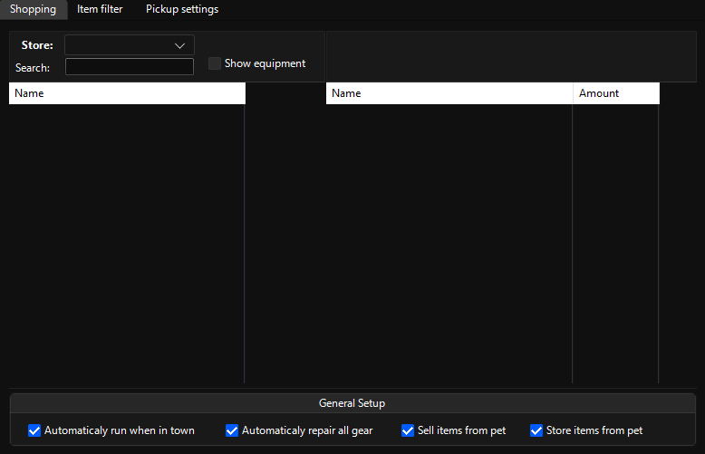
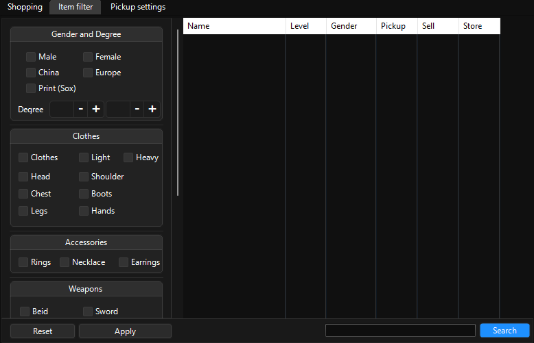
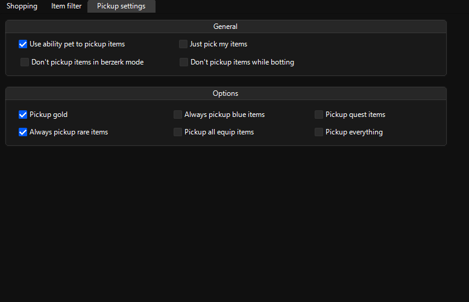

Items
Shopping
Make a shopping list for consumables here.
{kind=link}
Item filter
Filtering items to pick up / sell / store.
{kind=link}
[!TIP] When you’re finished selecting items to sell / store It’s recommended you search for all items with
Rare (SoX)option marked without any other selections and tick them all withDon’t sellandStoreto not have any issues with valuables.
[!TIP] If you have a secondary weapon / shield that you use, search with the name of your weapons and untick sell / store as bot currently doesn’t have a function to mark your items as main weapon / secondary weapon / shield.
[!IMPORTANT] On clothes, if you select
Clothes,Light,Heavywithout the type of the item (Head,Chestetc.) it won’t display all equipment of that type, instead it will show you the entire list.
[!WARNING] Because the accessories don’t have a gender attribute you’ll end up with nothing if you select a gender and an accessory type.
[!WARNING] Bot can’t list stones based on their degree. Use search to get your desired stone degree with
(Lvl.x)x as the degree.
Pickup settings
Modifies the behavior of item picking.
{kind=link}
[!IMPORTANT] Tick in-game
Grab functiontoON,Target grab authoritytoGrab all itemsandTarget itemto onlyGoldto ensure that your pet will pick gold and only the filtered items.